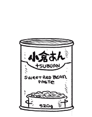

tsubuan
Tsubuan is a way of preparing red bean paste (anko あんこ, 餡) made from boiling azuki beans, mashing them and then adding sugar. Tsubuan, unlike Koshian, has a chunky and rough texture.
To make tsubuan at home, you need: 200g azuki beans, water, salt and 200g of sugar. Soak the beans 8-12h, rinse them off, add them to a pot and add water till it reaches 2in over the beans. Bring water to a boil, turn off heat, cover with a lid and let stand for 5 min. Strain water from beans, add them back to the pot again with enough water to cover the beans. Bring to a boil, turn heat to med-low and let simmer for 1h or more. Add more water if the level falls too low. To tell if the beans are ready, squeeze one with your finger. If the skin gives easily, it's done. Turn heat up again, add sugar and stir constantly. When you draw a line on the bottom of the pot and can see the surface for more than 2 seconds, add salt, mix, and turn off the heat. Let cool, the paste will thicken. Transfer to a bowl to cool.